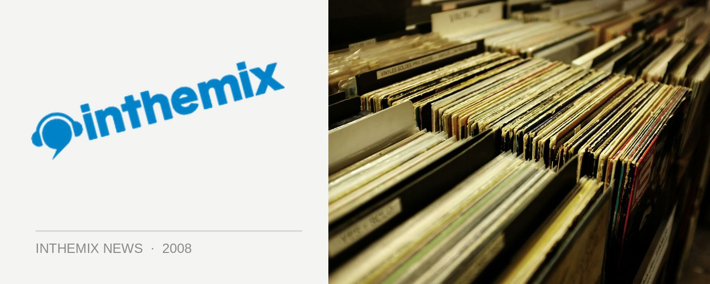

Shapeshifter roll back into town this September
Quite simply, Shapeshifter rank among some of the world’s finest live drum n’ bass acts, as well as being up there with as one of the finest live electronic acts full stop, for people who are lucky enough to be acquainted with their sounds. They mightily impressed the crowds with their spot on the Parklife bill last year, and they’ll be in September for another round of solo gigs.
Since playing Parklife festival late last year, Shapeshifter have toured throughout Europe twice as well as massive jaunts through their home country of New Zealand. They’ll be releasing their live album in August that promises to capture on disc the famed euphoria of their performances, captured at the Christchurch Town Hall on the final date of their sold out orchestra tour. And the band have promised fanbs that they’ll be dropping several new tracks on the upcoming tour, which will be featuring on their next studio album which is due for release in mid 2009.
Catch Shapeshifter bringing the magic back at the following shows…
Friday 5 September – Metro, Sydney
Saturday 6 September – Great Northern Hotel, Byron Bay
Sunday 7 September – The Zoo, Brisbane
Thursday 11 September – Rosemount, Perth
Friday 12 September – The Gov, Adelaide
Saturday 13 September – The Forum, Melbourne